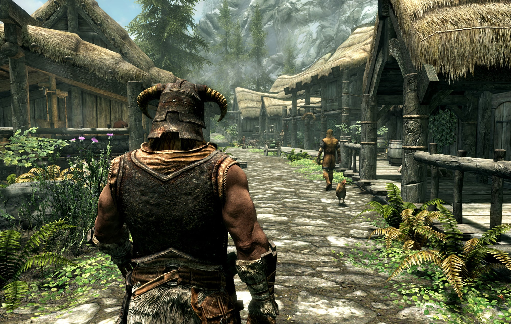
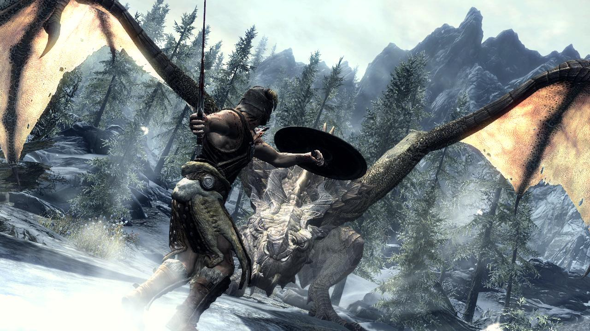

Eclipsed Realms
Género
RPG
Historia
En el mundo de Eclipsed Realms, dos dimensiones convergen: el Reino de las Sombras y la Tierra de los Sueños. Los personajes principales, conocidos como "Cosechadores Oníricos", son individuos con la capacidad de viajar entre estos dos mundos. Se descubre que una antigua profecía predice la llegada de un ser oscuro que amenaza con fusionar ambos reinos y sumir todo en la oscuridad eterna.
Los Cosechadores Oníricos son seleccionados para unir fuerzas y evitar que la profecía se cumpla. Mientras luchan contra criaturas de pesadilla y conspiraciones oscuras, los personajes descubren que cada uno posee un "Persona", un alter ego místico que otorga habilidades sobrenaturales y puede evolucionar a través de las relaciones y experiencias.
Exploración
El juego cuenta con dos mundos para explorar: el mundo real y el Reino de las Sombras. Los jugadores pueden cambiar entre estos mundos para resolver rompecabezas, encontrar secretos y desbloquear nuevas áreas.

Combate
El sistema de combate es en tiempo real y estratégico. Los jugadores controlan a su personaje principal y a sus Personas en la batalla. Las Personas otorgan habilidades únicas, y los jugadores pueden fusionarlas para crear nuevas habilidades y estrategias. Los compañeros de equipo también tienen Personas, y la relación con ellos afecta tanto el desarrollo del personaje como el rendimiento en combate.

Relaciones Sociales
Los jugadores pueden desarrollar relaciones con otros personajes. Estas relaciones afectan la fuerza de las y desbloquean eventos específicos de la historia. Tomar decisiones éticas o morales afecta las relaciones y el desarrollo del personaje.
Tomar Decisiones
Las elecciones del jugador afectan la historia y el mundo que lo rodea. Pueden influir en el curso de la profecía y determinar el destino de los dos reinos.

Gráficos y Estilo Artístico
Un estilo artístico que combina la estética moderna con la fantasía épica. Ambientes detallados, personajes expresivos y una paleta de colores que reflejan la dualidad entre los dos reinos.
Música
Una banda sonora que mezcla elementos modernos y fantásticos. Canciones épicas para las batallas y piezas más íntimas para los momentos de desarrollo de personajes y relaciones.

Plataformas
Eclipsed Realms estaría disponible en plataformas como PC, consolas de última generación y posiblemente dispositivos de realidad virtual para una experiencia aún más inmersiva.